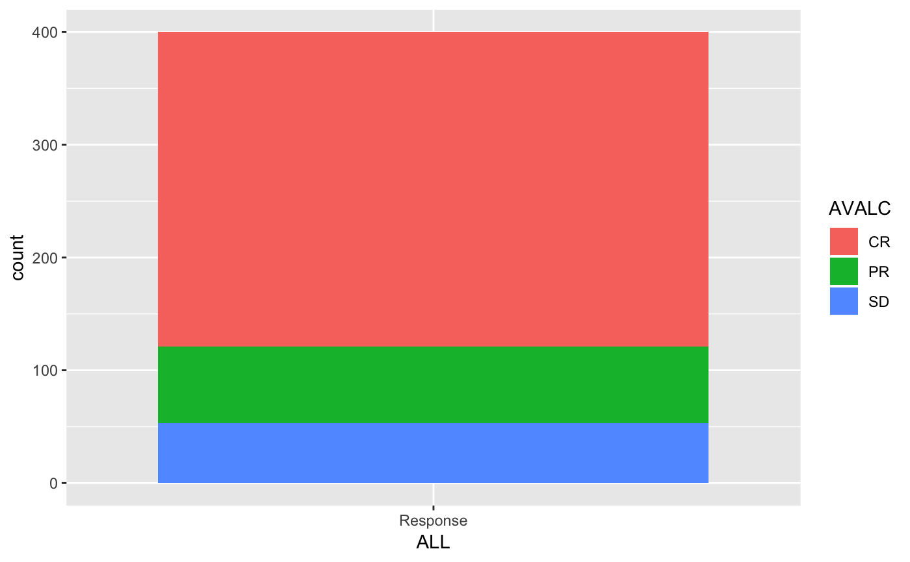
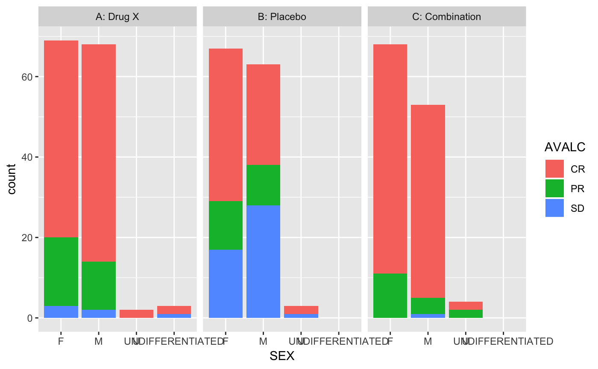
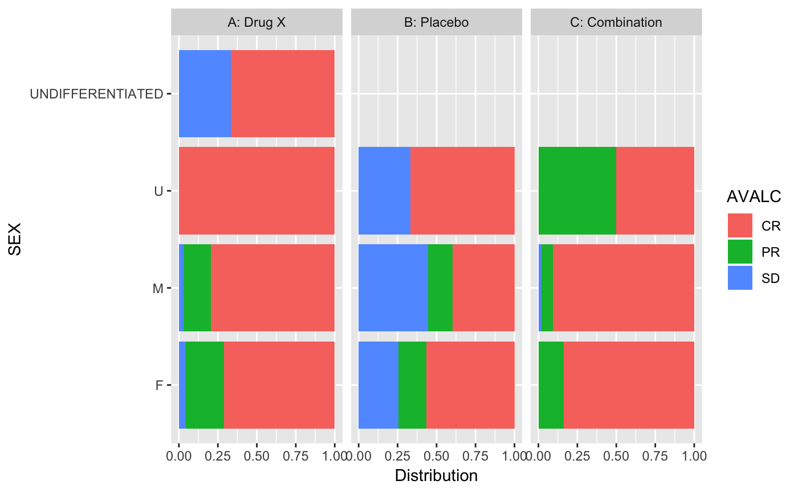
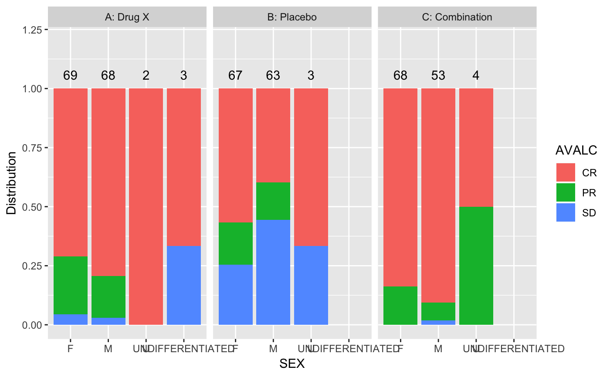
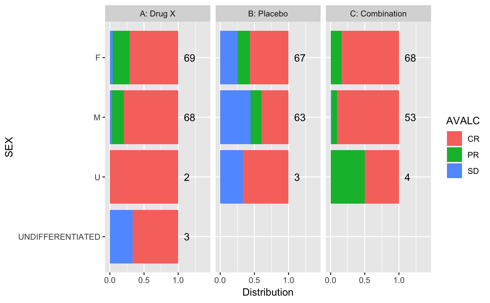

Response Plots
tm_g_response.RdResponse Plots
tm_g_response(label = "Response Plot", dataname, response, xvar = NULL, row_facet_var = NULL, col_facet_var = NULL, coord_flip = TRUE, freq = FALSE, plot_height = c(600, 400, 5000), pre_output = NULL, post_output = NULL)
Arguments
| label | label shown in the navigation for the item |
|---|---|
| dataname | ( |
| response | ( |
| xvar | ( |
| row_facet_var | ( |
| col_facet_var | ( |
| coord_flip | ( |
| freq | ( |
| plot_height | ( |
| pre_output | optional, |
| post_output | optional, |
Examples
library(random.cdisc.data) library(tern) ASL <- radsl(seed = 1) ARS <- radrs(ASL, seed = 1) keys(ASL) <- c("USUBJID", "STUDYID") keys(ARS) <- c("USUBJID", "STUDYID", "PARAMCD") ars_filters <- filter_spec( vars = c("PARAMCD"), sep = " - ", choices = unique(ARS$PARAMCD), selected = unique(ARS$PARAMCD)[1], multiple = FALSE, label = "Choose endpoint" ) ars_extracted_response <- data_extract_spec( dataname = "ARS", filter = ars_filters, columns = columns_spec( choices = c("AVALC"), selected = c("AVALC"), multiple = FALSE, fixed = TRUE, label = "variable" ) ) asl_extracted <- data_extract_spec( dataname = "ASL", columns = columns_spec( choices = names(ASL), selected = c("RACE"), multiple = FALSE, fixed = FALSE ) ) asl_extracted_row <- data_extract_spec( dataname = "ASL", columns = columns_spec( choices = c("", "SEX", "AGE"), selected = "", multiple = FALSE, fixed = FALSE ) ) asl_extracted_col <- data_extract_spec( dataname = "ASL", columns = columns_spec( choices = c("", "SEX", "AGE"), selected = "", multiple = FALSE, fixed = FALSE ) ) app <- init( data = cdisc_data( ASL = ASL, ARS = ARS, code = 'ASL <- radsl(seed = 1) ARS <- radrs(ASL, seed = 1) keys(ASL) <- c("USUBJID", "STUDYID") keys(ARS) <- c("USUBJID", "STUDYID")', check = FALSE), modules = root_modules( tm_g_response( dataname = "ARS", response = list(ars_extracted_response), xvar = list(asl_extracted), row_facet_var = list(asl_extracted_row), col_facet_var = list(asl_extracted_col) ) ) )#> |apply filter for ASL #> |apply filter for ARS #> |** UI id for modules is teal_modules.root #> |UI id for module is teal_modules_root.Response_Plot# NOT RUN { shinyApp(app$ui, app$server) # }#> Warning: package ‘dplyr’ was built under R version 3.5.2#> #>#> #> #>#> #> #>#> #> #>library(forcats)#> Warning: package ‘forcats’ was built under R version 3.5.2#>ANL_FILTERED <- ANL %>% dplyr::filter(PARAMCD == "BESRSPI") %>% # strict call of filter mutate(ALL = factor(rep("Response", n()))) ANL_FILTERED %>% ggplot() + aes(x = ALL) + geom_bar(aes(fill = AVALC))ANL_FILTERED %>% ggplot() + aes(x = SEX) + geom_bar(aes(fill = AVALC))ANL_FILTERED %>% ggplot() + aes(x = SEX) + geom_bar(aes(fill = AVALC)) + facet_grid(cols = vars(ARM))ANL_FILTERED %>% ggplot() + aes(x = SEX) + geom_bar(aes(fill = AVALC), position = "fill") + facet_grid(cols = vars(ARM)) + ylab("Distribution") + coord_flip()ANL_FILTERED %>% ggplot() + aes(x = SEX) + geom_bar(aes(fill = AVALC), position = "fill") + geom_text(stat = "count", aes(label = ..count.., vjust = -1), position = "fill") + expand_limits(y = c(0, 1.2)) + facet_grid(cols = vars(ARM)) + ylab("Distribution")ANL_FILTERED %>% ggplot() + aes(x = fct_rev(SEX)) + xlab("SEX") + geom_bar(aes(fill = AVALC), position = "fill") + geom_text(stat = "count", aes(label = paste(" ", ..count..), hjust = 0), position = "fill") + scale_y_continuous(limits = c(0, 1.4)) + facet_grid(cols = vars(ARM)) + ylab("Distribution") + coord_flip()